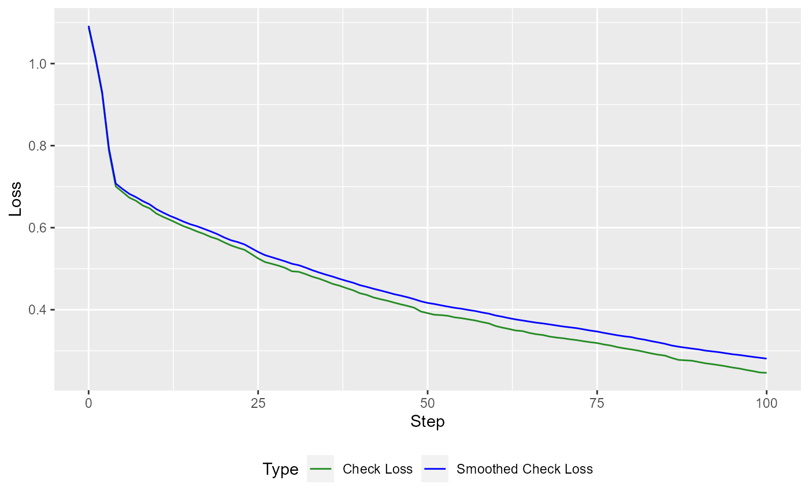
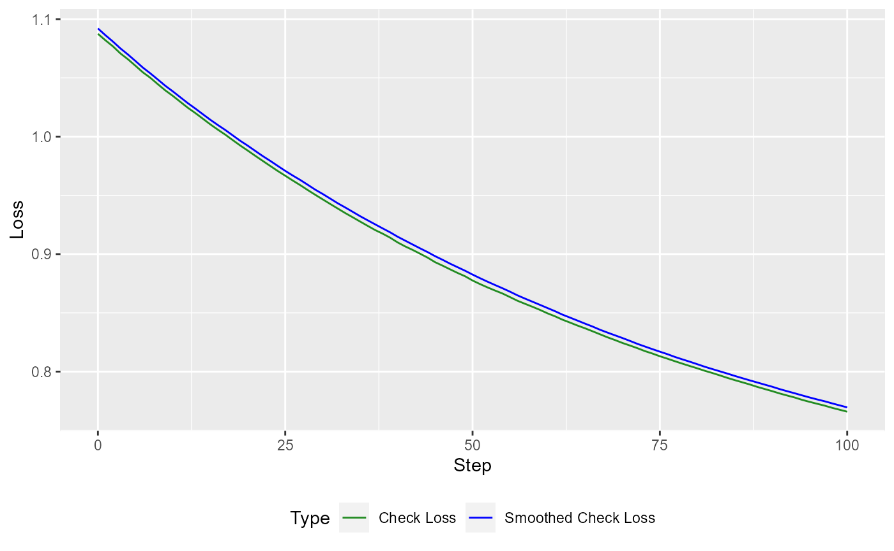
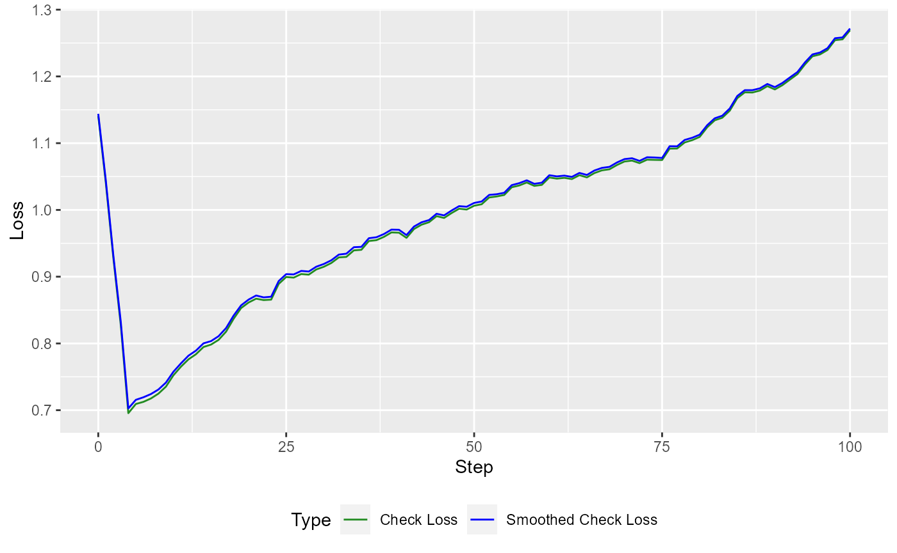
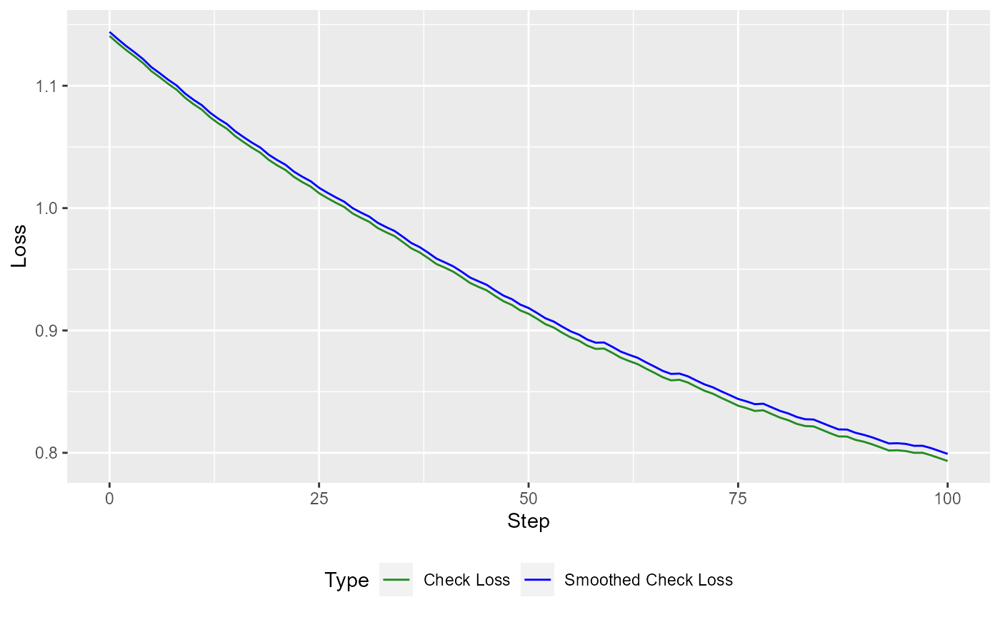
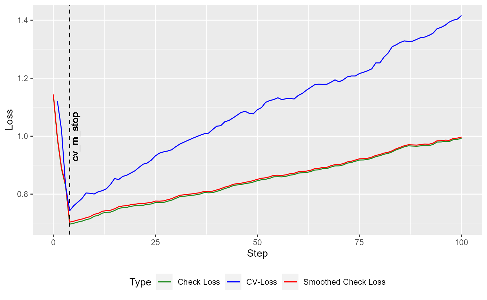
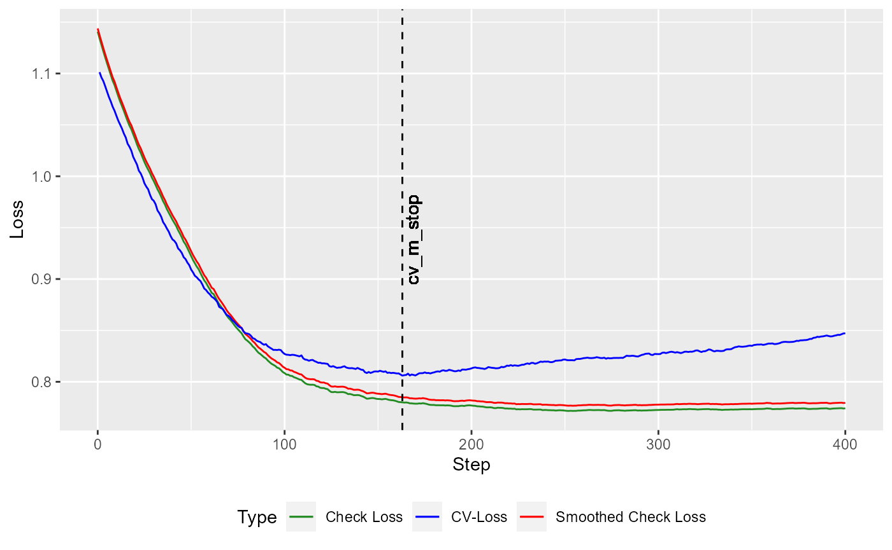
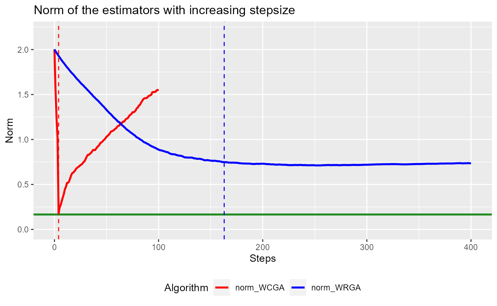

A simple example. We generate data from a basic linear model \[ Y = \beta_0 + X^T\beta +\epsilon,\] where \(\beta_0=1\) and \(\epsilon\sim t_2\). To account for a high-dimensional setting, we only generate \(n = 200\) observations, whereas the covariates \(X\) are generated from a standard multivariate gaussian distribution of dimension \(p = 500\). The coefficient vector is set to \[ \beta_j = \begin{cases} 1,\quad j = 1,\dots s\\ 0,\quad j = s+1,\dots,p\end{cases},\] such that the first \(s\) components are relevant.
library(MASS)
set.seed(42)
n <- 200; p <- 500; s <- 4
beta <- rep(c(1,0),c(s+1,p-s))
X = mvrnorm(n, rep(0, p), diag(p))
epsilon = rt(n, 2)
Y = cbind(1, X) %*% beta + epsilonNext, we use the orthogonal variant of the qboost algorithm (WCGA, by setting stepsize = NULL) and proceed for \(100\) greedy selection steps.
library(qboost)
n_steps <- 100; tau <- .5
model_WCGA <- qboost(X,Y, tau = tau, m_stop = n_steps, h = 0.2, kernel = "Gaussian", stepsize = NULL)
# selected covariates
print(model_WCGA$selection_path[1:10])
#> [1] 3 1 2 4 410 343 451 261 433 422At first let us take a look at the Loss

Additionally, we can employ the Weak Restricted Greedy Algorithm.
model_WRGA <- qboost(X,Y, tau = tau, m_stop = n_steps, h = 0.2, kernel = "Gaussian", stepsize = 0.1)Again, the loss looks is minimized
autoplot(model_WRGA, new_Y = Y, newdata = X)
Of course, the loss is much more interesting on a test set.
n_test = 1000
X_test = mvrnorm(n_test, rep(0, p), diag(p))
epsilon_test = rt(n_test, 2)
Y_test = cbind(1, X_test) %*% beta + epsilon_test
autoplot(model_WCGA, new_Y = Y_test, newdata = X_test)
autoplot(model_WRGA, new_Y = Y_test, newdata = X_test) To see this a crossvalidated version to obtain the right stopping criterion. At first for the orthogonal variant
cv_model_WCGA <- cv_qboost(X,Y, tau = tau, m_stop = n_steps, h = 0.2, kernel = "Gaussian", stepsize = NULL)
autoplot(cv_model_WCGA, new_Y = Y_test, newdata = X_test) Next, repeat the same for the non-orthogonal algorithm (here with \(400\) steps).
cv_model_WRGA <- cv_qboost(X,Y, tau = tau, m_stop = 400, h = 0.2, kernel = "Gaussian", stepsize = 0.1)
autoplot(cv_model_WRGA, new_Y = Y_test, newdata = X_test)
To compare the performance to the oracle model, we apply the conquer algorithm to the first \(s\) components of \(X\) and report the norm of the coefficient vectors.
library(conquer)
fit.conquer <- conquer(X[,1:s], Y, tau = tau, h = 0.2, kernel = "Gaussian")
norm_conquer <- sqrt(sum((fit.conquer$coeff-beta[1:(s+1)])^2))
library(ggplot2)
library(reshape2)
df <- melt(data.frame("norm_WCGA" = c(apply(cv_model_WCGA$coeff_path,2,
function(x) sqrt(sum((x-beta)^2))),rep(NA,400-n_steps)),
"norm_WRGA" = apply(cv_model_WRGA$coeff_path,2,
function(x) sqrt(sum((x-beta)^2))),
"step" = 0:400),
id = c("step"))
ggplot(df) +
geom_line(aes(x = step,y = value, color = variable), size = 1) +
scale_colour_manual(values=c("red","blue")) +
geom_hline(yintercept = norm_conquer, color = "Forestgreen", size = 1) +
geom_vline(xintercept = cv_model_WCGA$cv_m_stop, linetype = "dashed", color = "red") +
geom_vline(xintercept = cv_model_WRGA$cv_m_stop, linetype = "dashed", color = "blue") +
ylim(c(0,2.2)) +
labs(title = "Norm of the estimators with increasing stepsize",
x = "Steps",
y = "Norm",
colour = "Algorithm") +
theme(legend.position = 'bottom')